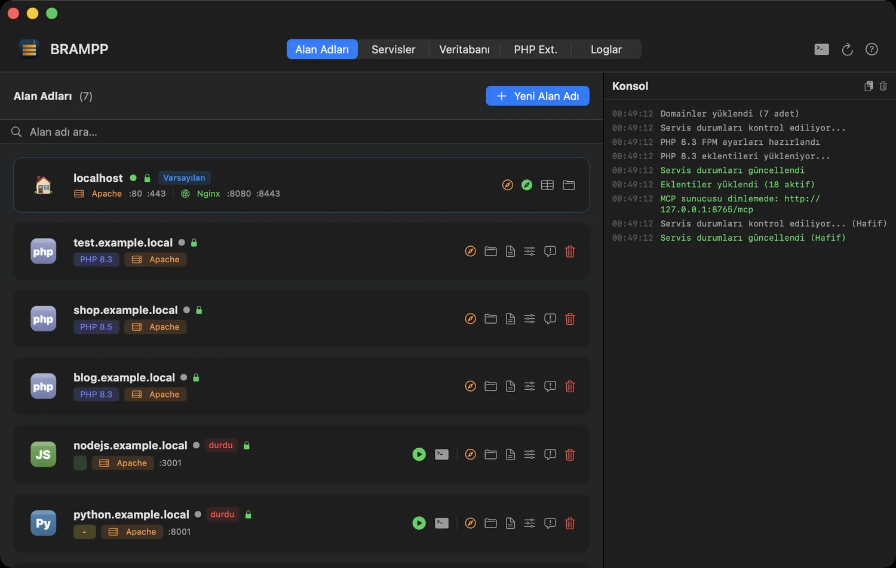
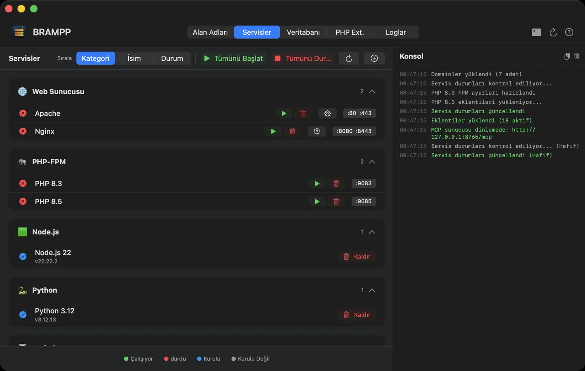
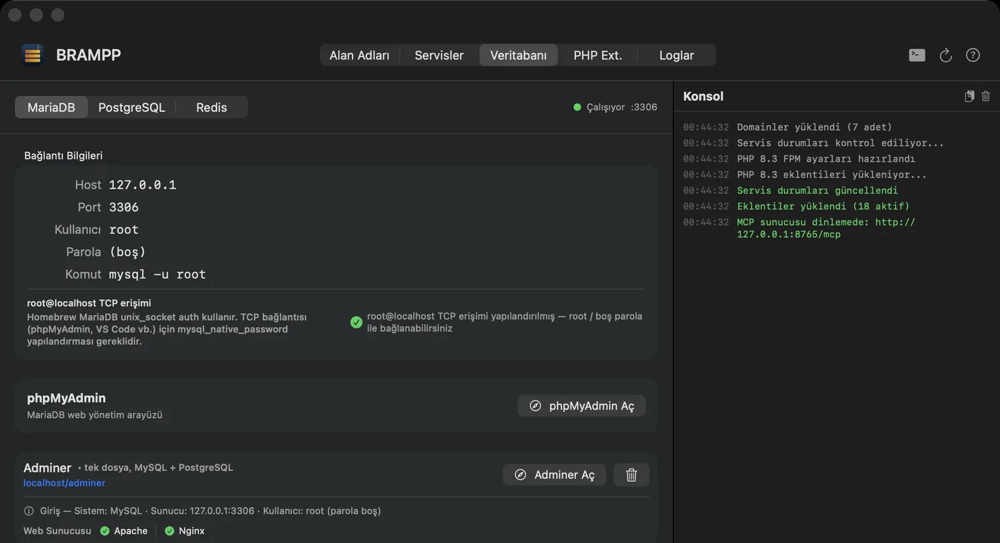
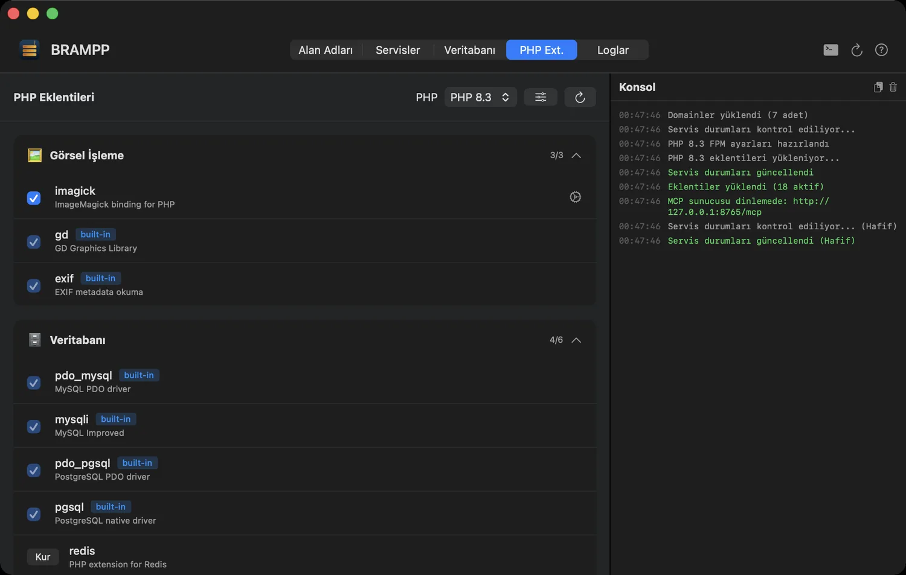
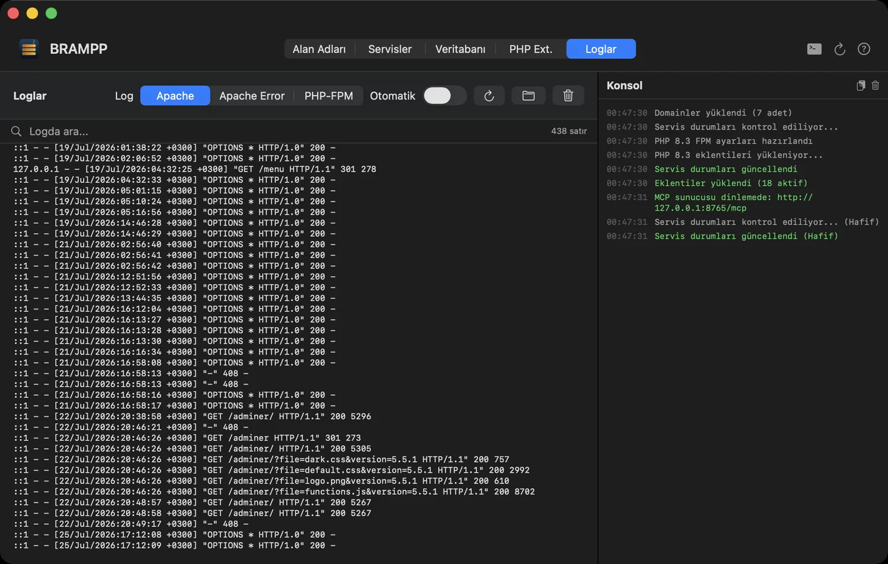
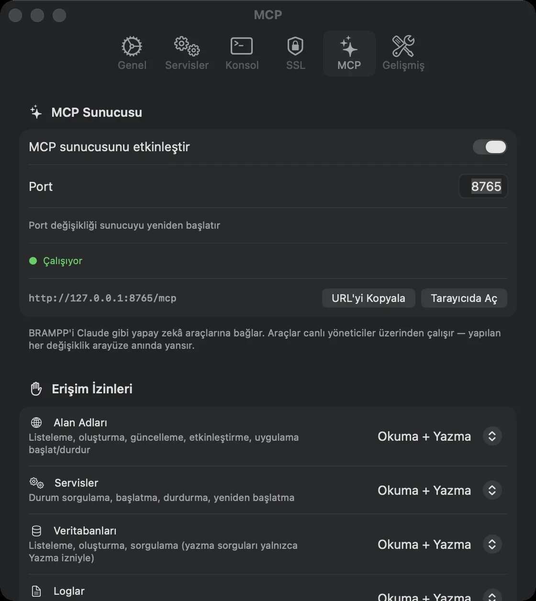

BRAMPP Homebrew üzerine kurulu macOS geliştirme platformu
Zaten kurulu olan Homebrew servislerinizi süren tek bir native uygulama — yerel alan adları, otomatik HTTPS, veritabanları, uygulama sunucuları ve birine göstermeniz gerektiğinde geçici bir herkese açık adres. Paketlenmiş ikili yok, hiçbir şeyin ikinci kopyası yok.
Ücretsiz · MIT · macOS 14+ · Apple Silicon

Bütün yerel siteleriniz tek listede — platform, PHP sürümü, web sunucusu, SSL ve canlı durum.
Mac'inizde zaten bir sunucu var. Onu kullanın.
Bütün mesele iki paragrafa sığıyor.
XAMPP ve MAMP kendi kopyalarını getirir
Terminalde kullandığınız Homebrew kurulumunun yanına ikinci bir Apache, ikinci bir PHP ve ikinci bir MySQL kurarlar. İki web sunucusu, iki php.ini, iki veri klasörü — ve yine tek bir 80 portu.
BRAMPP sizin kurduğunuz servisleri çalıştırır
Hiçbir sunucu ikilisi taşımaz; brew ile kurduğunuz aynı httpd, php ve mariadb üzerinde çalışır ve zahmetli kısımları üstlenir: virtual host'lar, /etc/hosts kayıtları, yerel sertifikalar ve veritabanı işleri.
Nerede duruyor?
Paketlenmiş ikililer mi, kendi Homebrew servisleriniz mi — kısa hâli.
XAMPP / MAMP karşısında
| Ölçüt | XAMPP / MAMP | BRAMPP |
|---|---|---|
| Sunucu ikilileri | Gömülü, izole, mükerrer | Kendi Homebrew servisleriniz |
| Desteklenen platformlar | PHP ve Perl | PHP, Node.js, Python, ASP.NET Core, statik |
| Web sunucuları | XAMPP: Apache · MAMP: Apache ya da Nginx | Apache ve Nginx (aynı anda bile) |
| Veritabanları | XAMPP: MariaDB · MAMP: MySQL | MariaDB/MySQL, PostgreSQL, Redis |
| Yerel HTTPS | Elle, zahmetli | mkcert ile otomatik |
brew upgrade uyumu | Pek değil | Zaten bütün mesele bu |
| Yapay zekâ erişimi | — | Yerleşik MCP sunucusu, 22 araç |
| Uçtan uca arm64 | Ürüne ve kuruluma göre değişir | Uygulama ve yönettiği tüm servisler, native |
| Fiyat | XAMPP ücretsiz · MAMP PRO ücretli | Ücretsiz, MIT, açık kaynak |
Neler yapıyor
Altısı burada. Her biri, yoksa gece bir'de bir yapılandırma dosyasında elle yapacağınız bir iş — tam liste özellikler sayfasında.
Servis kontrolü
Apache, Nginx, PHP-FPM 8.1–8.5, MariaDB, PostgreSQL ve Redis'i başlatın, durdurun, yeniden başlatın. Port kontrollü canlı durum, çökme bildirimleri, son çalışan servisleri açılışta başlatma.
Yerel alan adları
Saniyeler içinde projem.test: vhost, /etc/hosts kaydı, site klasörü ve örnek proje sizin için oluşturulur. Alan adı başına Apache ya da Nginx.
Her platform, tek uygulama
Alan adı başına sürümüyle PHP, Node.js, Python (venv ile FastAPI, Django, Flask), ASP.NET Core, statik siteler ve history-mode yönlendirmeli SPA'lar.
Gerçek yerel HTTPS
Tek tıkla mkcert entegrasyonu: yerel sertifika otoritesi, alan adı başına sertifika ve HTTP→HTTPS yönlendirme. Yeşil kilit, artık evinizde.
Terminalsiz veritabanı
Veritabanı oluşturma ve silme, yedekleme ve geri yükleme, phpMyAdmin / pgAdmin / Adminer kurucuları, ayrıca güvenli yazmalı my.cnf, postgresql.conf ve redis.conf panelleri.
Uçtan uca native arm64
BRAMPP.app, macOS 14+ üzerinde native bir Apple Silicon ikilisidir; yönettiği servisler de öyle: httpd, php-fpm, mariadbd ve redis-server Homebrew'un arm64 bottle'larından gelir. Uygulama da yığın da baştan sona native — Rosetta yok, emülasyon katmanı yok.
Uygulamada kısa bir tur
Altı sekme. Terminal gerekmiyor — ama çalıştırılan her komut önce ekrana yazılıyor.
localhost kartı iki web sunucusunun portlarını tek bakışta gösterir; + Yeni Alan Adı ise vhost, /etc/hosts kaydı, site klasörü ve örnek projeyi tek adımda kurar.

root@localhost TCP erişiminin yapılandırılıp yapılandırılmadığını algılar ve tek tık düzeltmeyi yalnızca gerçekten gerektiğinde önerir. Veritabanı oluşturun, silin, yedekleyin, geri yükleyin; phpMyAdmin ya da Adminer'i URL ezberlemeden açın.
php.ini hızlı ayarları — 8.1'den 8.5'e, her sürüm için ayrı ayrı.
tail -f cambazlığına gerek yok.
http://127.0.0.1:8765/mcp, yalnızca loopback; alan bazlı erişim izinleri, gerçekten kaç aracın etkin olduğunu gösteren canlı sayaç ve Claude Desktop, ChatGPT Codex ile beceri dosyası için tek tıkla kurulum.60 saniyede çalışır hâlde
Gereksinimler: macOS 14 Sonoma veya üstü, Apple Silicon ve Homebrew — Homebrew kurulu değilse sihirbaz kurmanıza yardım eder.
- İndirin ve sürükleyin.
BRAMPP.dmgdosyasını Releases sayfasından indirin, BRAMPP.app'i Uygulamalar klasörüne sürükleyin. - Açın. Uygulama Developer ID ile imzalı ve Apple tarafından noter onaylıdır — macOS ek bir adım istemeden çalıştırır.
- Kurulum sihirbazını çalıştırın. Apache portlarını, PHP-FPM'i, mkcert CA'sını, localhost SSL'ini, MariaDB root erişimini ve phpMyAdmin'i yapılandırır — yalnızca onayladığınızı kurar, çalıştırdığı her komutu konsolda gösterir.
- İlk alan adınızı oluşturun. + Yeni Alan Adı → bir ad ve platform seçin → tarayıcıda
https://projem.testadresini açın.
Asistanınız ortamı sizin için yönetsin
Ayarlar'daki tek bir anahtarı açın, BRAMPP bir Model Context Protocol sunucusuna dönüşsün. Asistanınız alan adı oluşturabilir, gereken servisleri başlatabilir ve günlüklere bakabilir — siz pencerenin canlı güncellenmesini izlerken.
Uç nokta: http://127.0.0.1:8765/mcp — yalnızca loopback'e bağlı, öntanımlı kapalı; siz açıkça izin vermedikçe SQL salt okunur.
Gerçekten sorulan sorular
Dokuz yanıt, doğrudan README'den.
Bu, Mac'te XAMPP'in yerini tutar mı?
Evet — tasarım hedefi tam olarak bu. XAMPP/MAMP akışını karşılar, üstüne Nginx, PostgreSQL, Redis, Node.js, Python ve ASP.NET Core ekler. XAMPP'ten farklı olarak ikili dosya paketlemez; mevcut Homebrew servislerinizi yönetir.
Mevcut Homebrew kurulumumla kavga eder mi?
Hayır — zaten o sizin Homebrew kurulumunuz. BRAMPP hiçbir şeyin ikinci bir kopyasını kurmaz.
Uygulama imzalı ve noter onaylı mı?
Evet. Yayın sürümleri Developer ID Application sertifikasıyla imzalanır ve Apple noter onayından geçer; bilet hem DMG'ye hem uygulamaya zımbalanır, böylece ilk açılışta internet olmasa bile doğrulanır. spctl -a -vvv -t exec /Applications/BRAMPP.app komutu source=Notarized Developer ID demeli. Proje tümüyle açık kaynaktır; dilerseniz kendiniz derleyin.
Şifremi ne için soruyor?
Yalnızca /etc/hosts düzenlemeleri için (127.0.0.1 projem.test satırını eklemek gibi). Her işlem ayrı ayrı sorar ve çalıştırılacak komutu önce gösterir.
BRAMPP Node.js / Python / ASP.NET uygulamamı çalıştırabilir mi?
Evet — her uygulama, bağımlılığı olmayan bir süpervizör altında otomatik yeniden başlatma ve birleşik günlüklerle çalışır; önünde ters vekil (reverse proxy) olarak Apache ya da Nginx durur (WebSocket, SSE, HTTP/2 ve gRPC seçenekleri dahil). Uygulamanızdan önce otomatik başlayacak servis bağımlılıkları da tanımlayabilirsiniz (örneğin MariaDB + Redis).
Hangi PHP sürümleri destekleniyor?
PHP 8.1, 8.2, 8.3, 8.4 ve 8.5 yan yana — her alan adı kendi sürümünü sabitleyebilir; eklenti yöneticisi de sürüm başına çalışır.
Hangi Mac'lerde çalışır?
Yalnızca Apple Silicon. Dağıtılan sürüm yerel bir arm64 ikilisidir ve macOS 14 (Sonoma) veya üstünü gerektirir — Intel Mac'ler desteklenmez. Homebrew prefix'i (/opt/homebrew) otomatik algılanır.
Claude gibi yapay zekâ araçları BRAMPP'i kullanabilir mi?
Evet — yerleşik MCP sunucusunu açtığınızda (Ayarlar → MCP) MCP destekleyen her istemci 19 araca kavuşur: alan adı listeleme/oluşturma/güncelleme, uygulama sunucusu başlat/durdur, servis durumu ve başlat/durdur/yeniden başlat, BRAMPP ve alan adı loglarını okuma, veritabanı listeleme/oluşturma, salt-okunur SQL, mysqldump/pg_dump ile yedekleme ve geri yükleme. Alan bazlı izinlerle (Alan Adları, Servisler, Veritabanları, Loglar, Paylaşım) her alana izin yok, okuma ya da okuma + yazma verilir — izin vermediğiniz araçlar istemcide hiç görünmez. Yalnızca 127.0.0.1 üzerinden dinler ve varsayılan olarak kapalıdır.
Nasıl kaldırırım?
BRAMPP'ten çıkın, uygulamayı silin ve ~/Library/Application Support/BRAMPP klasörünü kaldırın. Homebrew servisleriniz ve site klasörleriniz olduğu gibi kalır.